Last Week’s Work Review#
- for the last month we found out that the agent had the following issues
-
it gives more weights to the object detection than action detection,
-
thus it gave wrong rewards when the agent was close to the target object but did the wrong action
-
e.g., it gave high rewards for sentence “climb down the ladder” when the agent was staying on the ladder
-
-
it tried to analyse each single word instead of recognising the phrases and the qualifier
- e.g., it gave rewards for sentence “go to the ladder on the right” when the agent was at the ladder on the middle
- e.g., it gave reward for sentence “climb down the ladder on the right” when the agent was jumping to the right platform
- the module cannot correctly handle the phrase “the ladder on the right”, instead, it treated it as two things – “ladder” and “right”
-
- our solution is to generate hard negative examples by replacing the noun phrase and the verb phrase in the original sentence with random phrases picked from the phrase set. and I call it “phrase polluted hard negative example generation”
You need password to access to the content, go to Slack *#phdsukai to find more.
Part of this article is encrypted with password:
[TOC]
TODO List#
-
continue the hard negative example stuffs and see if it can solve the problem
- solution: manually select hard negative phrases
-
Object detection module -> we need it eventually if we go symbolic AI planning
- check https://labelstud.io/ for video object annotation
-
mask instructions’ tokens to see what is the most important token in the sentence -> we may create a group of masked descriptions from specific to vague (e.g., stand at the conveyor belt and then jump right to the yellow rope -> jump to the yellow rope -> to the rope) (this is an evaluation stuff -> create a GUI for it) 1. if we want to annotate by ourselves, try this paraphrase tool https://github.com/PrithivirajDamodaran/Parrot_Paraphraser 1. also this tool https://github.com/words/powerthesaurus-api
-
Generating training data
- More negative examples generation
- reverse the video and make it negative example (neglect pairs that has “stay”, “wait” or other similar words in the sentence)
- freeze the video frame and make it negative (neglect pairs that has “stay”, “wait” words in the sentence)
- disrupt the order of the video clips for the long merged video (event ordering understanding) (check this qualitative analysis )
- More positive examples
- swap synonym
- concatenation of two or three pairs, and we know that at the merge point, we complete 50%/33.3% of the long text.
- balance the phrase frequency in the negative and the positive training dataset.
- More negative examples generation
-
A better validation dataset -> maybe create it by our hands?
-
Try video caption generation -> improve the interpretability, otherwise we don’t know what’s going on.
-
May continue the TODOs listed in the confirmation report (Which is Hindsight Experience Relabelling)
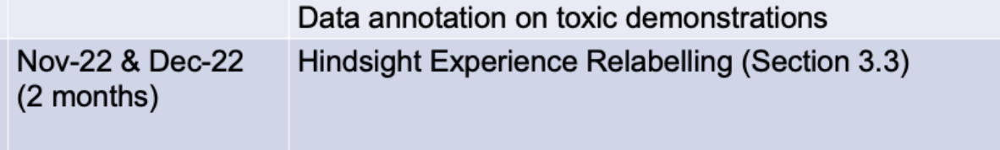
11 Nov – 18 Nov
Evaluation of the importance of each phrase in the sentence#
Go Teamviewer to run this tool
- we found that the prediction is invariant to the sliding window size for the video input
- the pretraining for the video encoder contributes this
Correct prediction example
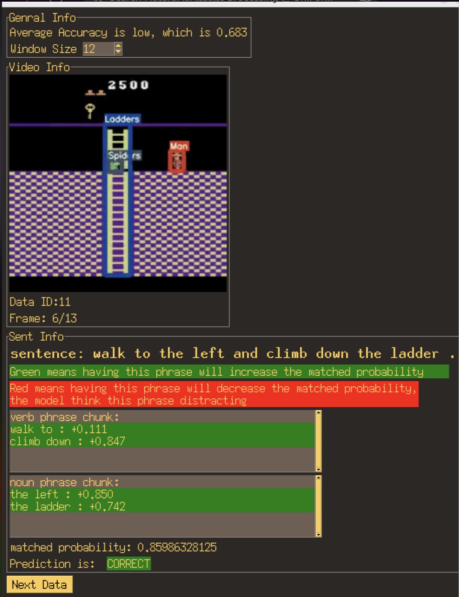
- this one is good, it captures all important info
Correct prediction but wrong understanding
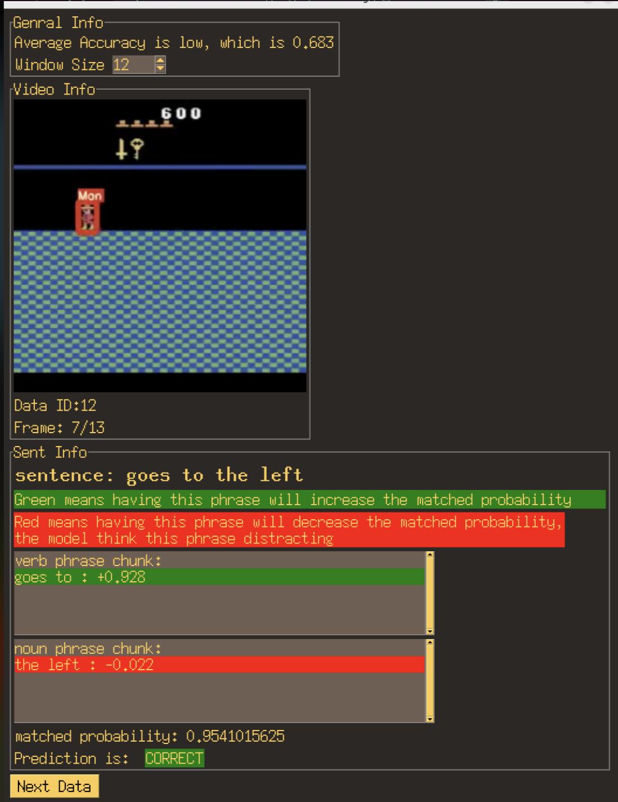
- to the left should be more important
Wrong prediction example
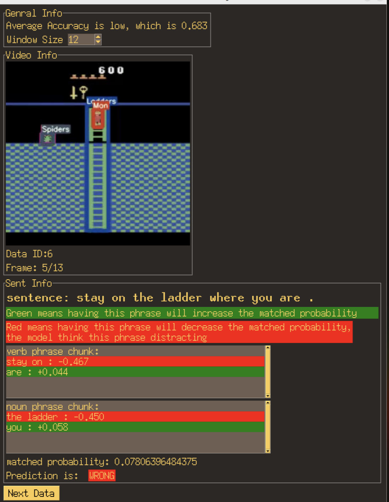
- the man just stays on the ladder, but the module cannot recognise this
Other ways to create training examples to measure the degree of completion of event#
Prediction accuracy for Positive examples are low –> 0.683
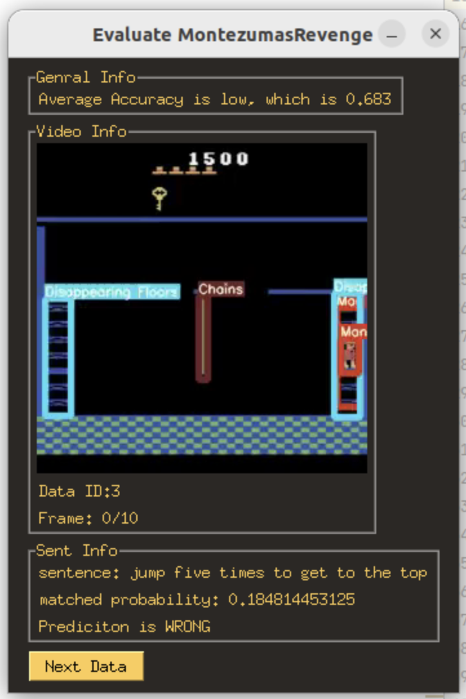
-
The language reward module’s task is about
- checking whether the past behaviour is matched with the correct instruction. (solved by in-batch negatives and hard negatives )
- check the degree of completion (not solved yet) -> this is about the temporal understanding
-
The language reward model indeed had the issue on understanding the degree of completion of event (see the qualitative analysis 2 )
-
Previously we thought that it is hard to get training data for predicting the completeness of the event is because
- we cannot tell the critical time of a single task (e.g., it is hard to determine what is 50% completion of a single task)
-
Solution: concatenation of two or three video-text pairs together, and we know that at the merge point, we complete 50%/33.3% of the long text.
-
Some other negative example generation options
- reverse the matched video (temporal understanding)
- freeze the video frame (temporal understanding)
- disrupt the order of the video clips for the long merged video (event ordering understanding) (check this qualitative analysis )
Immediate TODOs (Delete this section once finish)#
- retrain the model with the annotated video
- set action identifier’s video input to be 84 x 84
- but set language reward shaping main input to be 256 x 256 so that the model can see the labels on the video more clearly
RL agent performance#
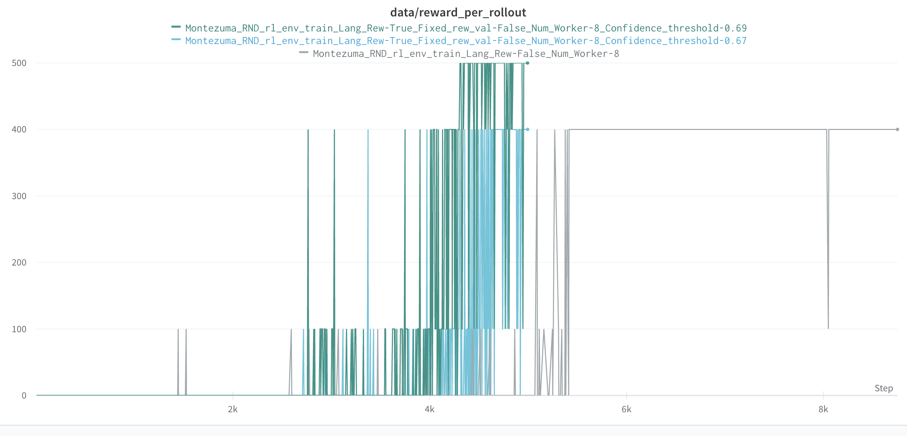
-
it appears that the language reward shaping method can help the agent to increase the frequency of getting out of the first room. -
Well, we need to admit that the RL agent can easily fall into local minima due to the inaccuracy of the language reward module.
Successful trajectory record
Qualitative analysis#
Ideally the language reward module should give highest reward at the time when the agent completed the task.
Sentence 1#
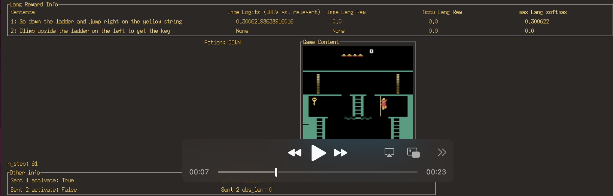
- interestingly, the agent directly jump to the rope instead of climb down the middle ladder, thus when the agent is on the ladder, the language reward module does not give the reward
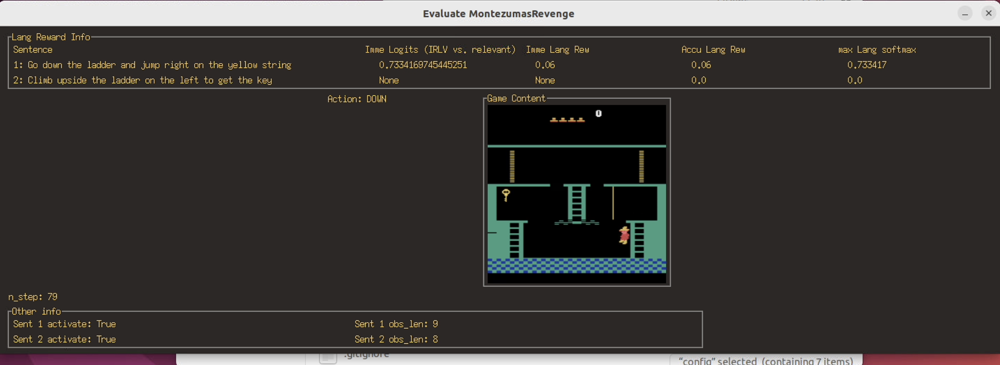
- After the agent climb down the right ladder, it gets the highest reward.
- It seems that the language reward module does not handle the temporal ordering clearly.
Sentence 2#
- again the language reward shaping module still has difficulty detect if the instruction is completed or not
- Ideally it should give highest reward at the time when the agent complete the task.
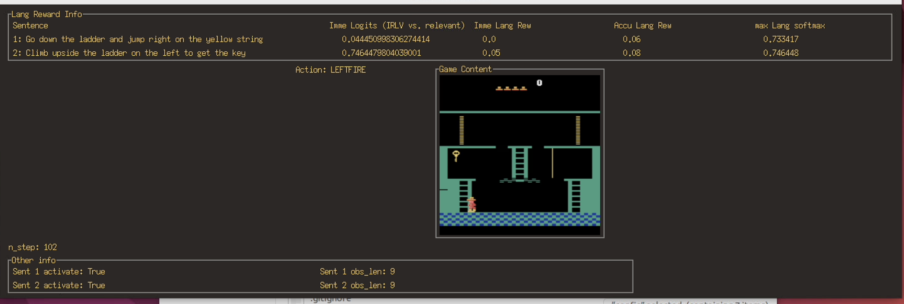
- see the screenshot above, the model gives the highest matched probability (0.74) for the instruction “climb upside the ladder on the left to get the key” when the agent is at the bottom of the left ladder
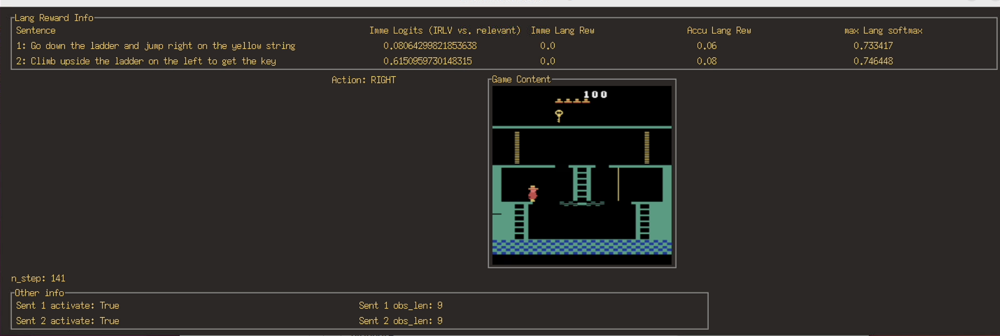
- See the screenshot above, when the agent get the key, the matched probability is 0.61, which is lower than 0.74 which was obtained when the agent was at the bottom of the ladder.
Fall into local minima#
gain all the reward by staying on the ladder
gain first sentence’s reward by jumping
Known issues#
the language reward shaping module (the binary classifier of matched video and language description) not robust to small changes in sentences
-
sometimes it just failed to recognise when we add just some qualifiers in the description (e.g., jump right to the platform vs jump right to the platform on the right)
- can be solved by having more training data with vague to specific language descriptions
-
Ideally the language reward module should give highest reward at the time when the agent completed the task. But the qualitative analysis 2 show that the model failed to do it.
- can be solved by concatenating two or three pairs of data
-
it recognises the wrong subject
- for sentence “walk to the right”, it gives reward when the skull is rolling to the right.
- can be solved by the object detection annotated observation
-
it does not give rewards if the phrase appears more often in the negative training dataset.
- e.g., the phrase “conveyor belt” is appeared more often in the negative examples, therefore the language reward shaping module tends to not give any reward when it sees the phrase “conveyor belt” in the sentence.
- can be solved by balancing the phrase frequency
-
Interpretability issue: I just don’t know why the language reward module is just inaccurate in analysing the following relevant instruction with the game scene
-
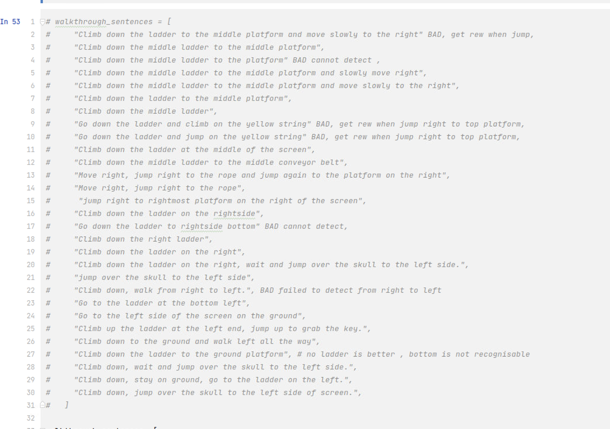
-
sometimes the module is over-confident on some sentences, (think they are always relevant) sometimes it’s under-confident on some others (think that they are always irrelevant), it’s very hard to evaluate the module.
-
we can create video -> text generator so that we can evaluate what’s going on
-
1 Nov – 10 Nov
Phrase polluted hard negative examples#
-
workflow
-
get the phrase in the sentence (e.g., verb phrases)
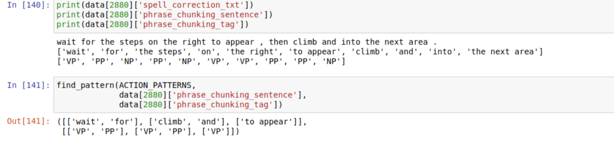
-
randomly pick one verb phrase (e.g, <wait for>), swap with one random verb phrase (e.g, <jump into>) in the verb phrase collection set
-
As a result, we get a “verb phrase polluted hard negative example” “Jump into the steps on the right to appear ….”
-
We can see that the new sentence may not make sense.
-
Training config version 1#
-
we did not change the testing dataset – meaning that in the testing dataset, the negative examples are still in-batch negative examples (i.e., pair the sentence with another random trajectory in the same batch)
-
But for the training dataset: 50% are positive examples (matched pairs), 15% are verb phrase polluted hard negative examples, 15% are verb phrase polluted hard negative examples, 20% are both polluted negative examples.
Result
- Interestingly, the model did not perform well on the testing dataset.
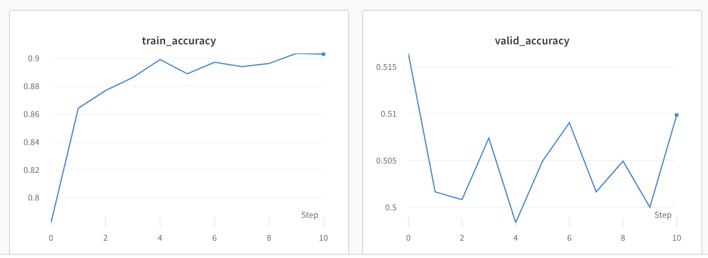
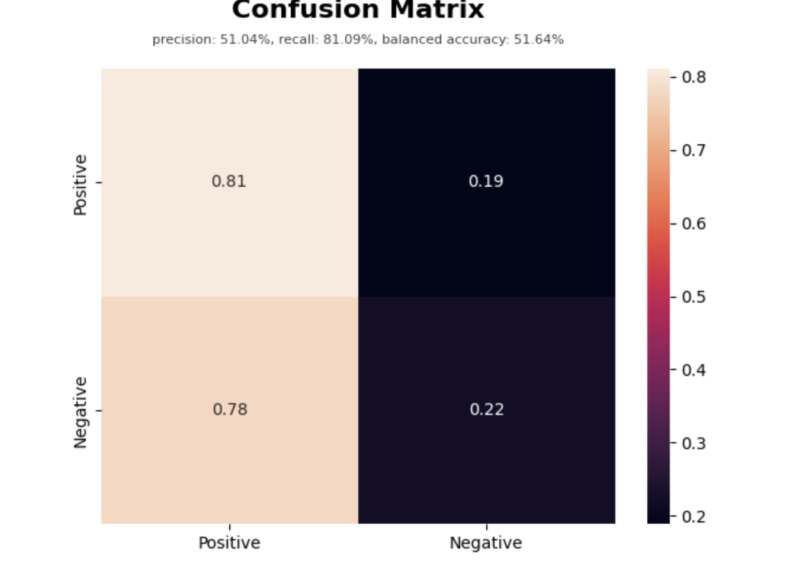
- this means that although the model that was trained by hard negative examples can recognise polluted “hard” negative examples, it cannot recognise the in-batch normal negative examples – false positive is high.
Training config version 2 – 20% normal in-batch negative#
- I changed from 20% are both polluted negative examples to 20% normal in-batch negative examples
- the testing performance indeed increases, but the false positive is still large
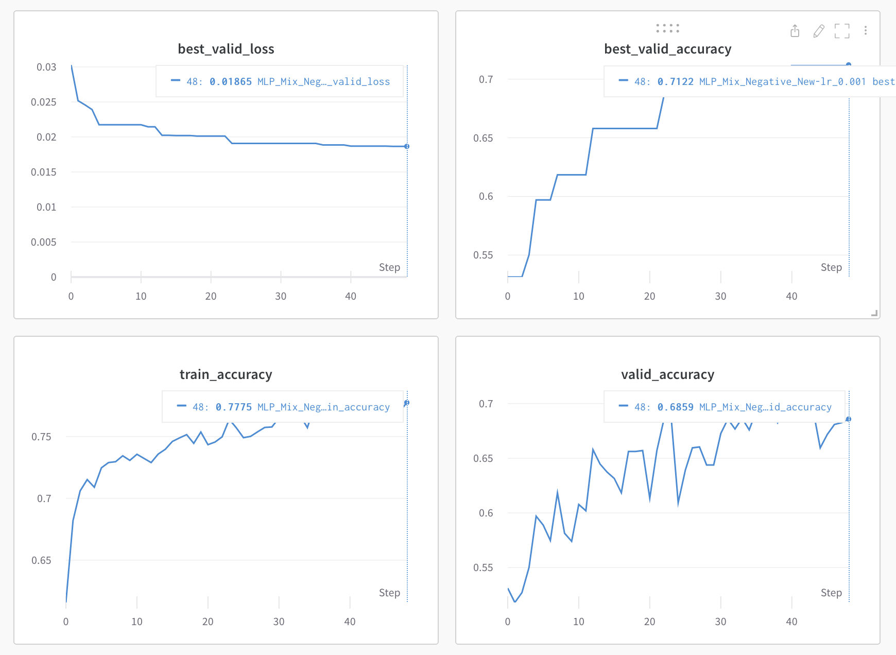
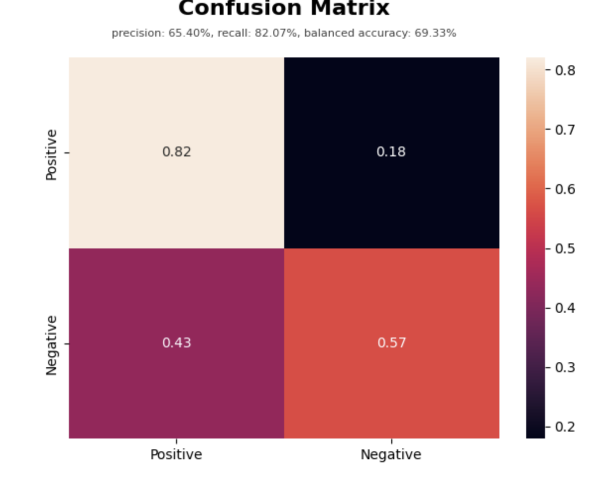
The result above implies that the phrase polluted hard negative examples are not that effective#
- common-sense intuition suggests that if the model can handle hard negative examples, it can also handle normal negative example
- At the very least, the false negative should be large instead of false positive
Possible reasons#
- I mentioned that sometimes the generated phrase-polluted hard negative sentence doesn’t make sense (e.g, you can “climb down” the ladder but you cannot “wait for” the ladder or climb down the skull.)
- And then I also used a SOTA sentence embedding model that can convert sentence into a latent vector that has semantic meaning.
- I suspect that this sentence transformer is able to detect whether the a sentence makes sense or not.
- and the non-sense sentence will has very different latent vector compared to that of coherent sentences.
Check cosine similarity score#
-
calculate the cosine similarity score of positive example and associated hard negative examples
-
If the assumption is true:
- solution: I can try to create hard negative examples by hand or some semi-automatic method to avoid non-sense hard negative examples.
-
if the assumption is false:
- solution: I can try word embedding models to encode the sentence rather than using sentence embedding model
Result#
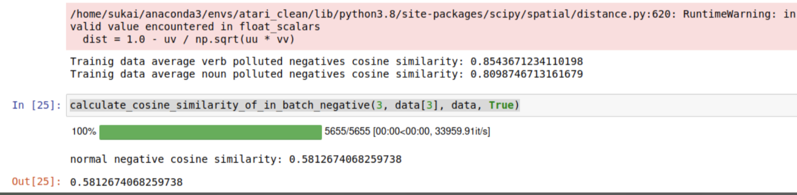
- looks like on average, the cosine similarity of hard negative examples are higher than in-batch negatives
- thus our assumption is false
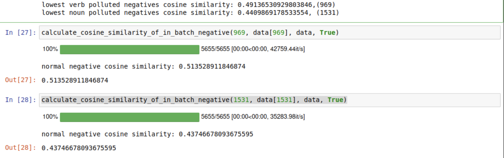
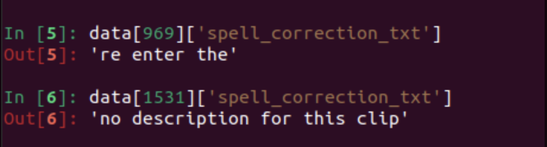
- We actually use this cosine similarity method to find out some bad training data
Dealing with the false positive#
- we realise that the false positive is due to that fact that the model is able to find a shortcut to tell if the sentence is polluted or not.
- [train epoch 20] loss: 0.007, acc: 0.906, lr: 0.00099: 100%|██████████| 177/177 [00:00<00:00, 830.08it/s] A simple linear model can reach 90% accuracy to distinguish them.I am going to think about some semi-automatic way to generate more coherent hard negative sentences. Hopefully next week we can get a game playing agent that can play Montezuma
- After generating hard negative examples by manual annotation, a simple linear model can reach 70% accuracy to distinguish polluted sentences.
Using RND RL model#
- Random Network Distillation
- check if the agent encounter the exact same state before
- give intrinsic reward if it reaches unseen state.
-
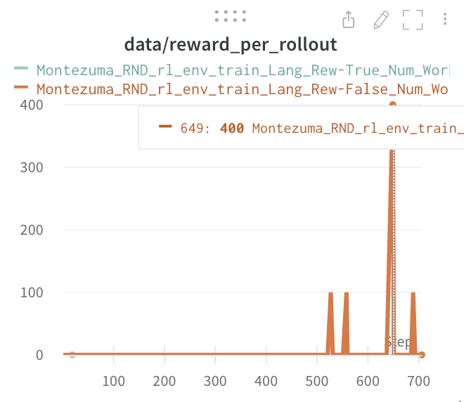
- it is able to get the key in room one within 2 hours training
Some Terminology#
rollout
- refer to a sampled sequence of (s,a,r) from interacting with the environment under a certain policy, but it might be only a segment of the episode, or even a segment of a continuing task, where it does not even make sense to talk about episodes.
- this is common in model-based reinforcement learning where artificial episodes are generated according to the current esimated model. this model might be very different from the actual environment.
- rollouts are used in planning (e.g., MCTS) where planning might be hard in the real world but it might be easy to generate virtual episode using a reasonable policy. rollout -> a future trajectory simulated by the current policy.
episode
- it begins with an initial state and finishes with a terminal state.
Room One instruction and observations#
sentence: [
"Climb down the middle ladder to the middle platform",
"Jump right to the rope and jump right again to the platform on the right",
"Walk left to the left side of the screen",
"Climb up the ladder at the left end, jump to grab the key"
]
- agent does not understand “the middle conveyor belt”, I changed to “the middle platform” and then it can understand .
- agent still faced difficulty detecting “jump over the skull”
- but it can detect whether our agent reach the mentioned “location” e.g., “xxx to the platform on the right”
- so I put “Walk left to the left side of the screen” instead of “Jump over the skull to the left side”
- the RL agent will find its own way to move to the left
Current lang rew module architecture#
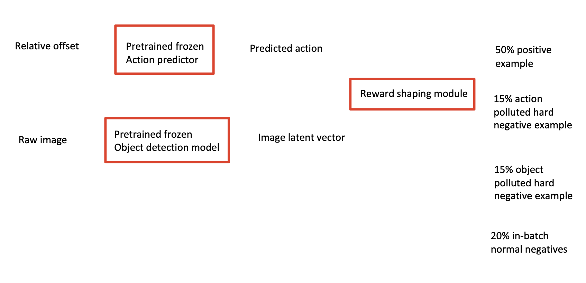
Paper Reading Notes#
-
Can Language Models Be Specific? How?
- Author: Jie Huang et. al.
- Publish Year: 11 Oct 2022
- Review Date: Tue, Nov 8, 2022
-
Diffusion-LM Improves Controllable Text Generation
- Author: Xiang Lisa Li
- Publish Year: May 2022
- Review Date: Mon, Nov 14, 2022
-
Context Aware Language Modeling for Goal Oriented Dialogue Systems
- Author: Charlie Snell et. al.
- Publish Year: 22 Apr 2022
- Review Date: Sun, Nov 20, 2022
-
Building Goal Oriented Dialogue Systems With Situated Visual Context 2021
- Author: Sanchit Agarwal et. al.
- Publish Year: 22 Nov 2021
- Review Date: Sun, Nov 20, 2022
-
DANLI: Deliberative Agent for Following Natural Language Instructions
- Author: Yichi Zhang
- Publish Year: 22 Oct, 2022
- Review Date: Sun, Nov 20, 2022